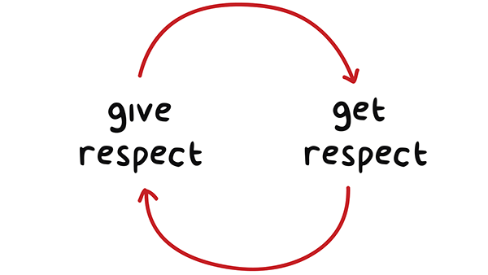

Boards for the Bored was born from a simple idea, based on a common problem. Why don't people listen to each other anymore? What can we do about it?
On Boards for the Bored we champion listening and communication above all. Disagreement is a part of life, but let's hold balanced discussions and counter each others points with relevant extensions of those points, not abuse, deflection and straw-man arguments
On the site you can start a discussion, join a discussion, or simply look at the stats. Logging in is optional, though we encourage you to do so. No matter what your preferences are, just remember, let's all get along!
